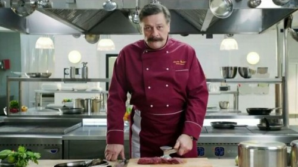
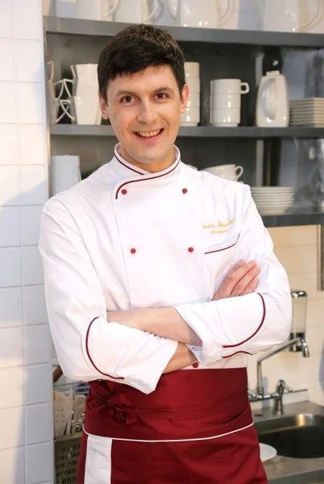
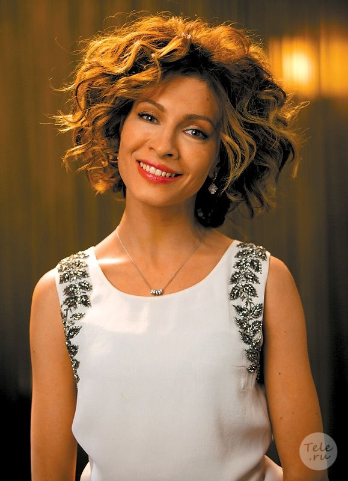
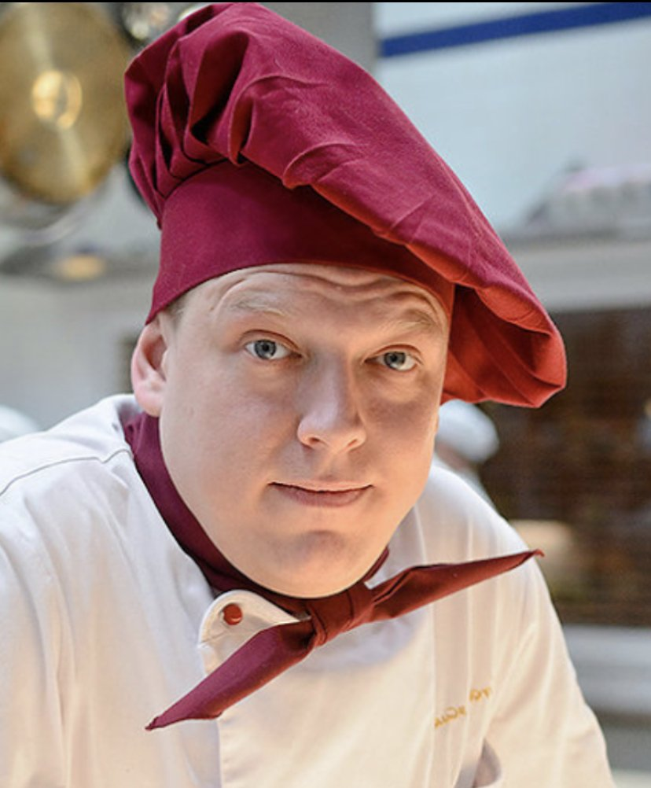
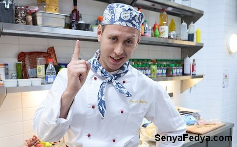
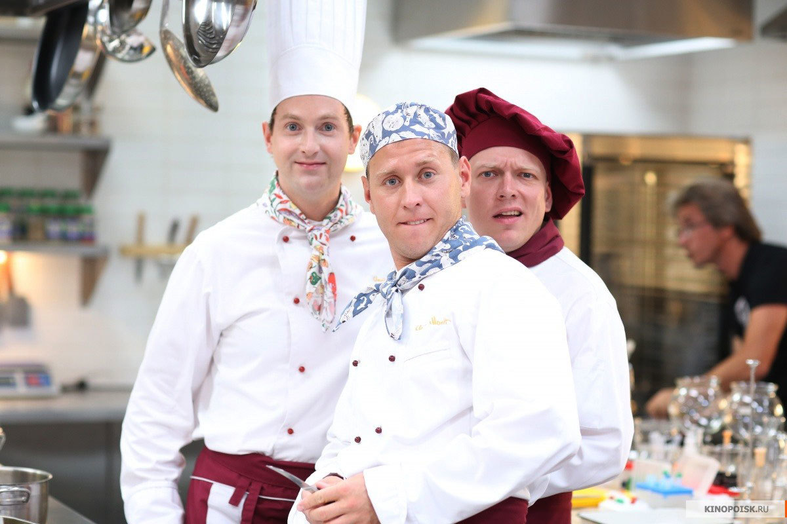
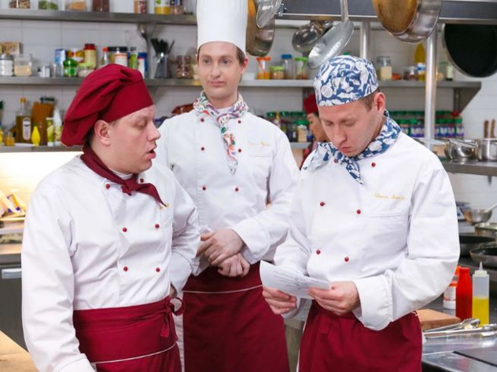
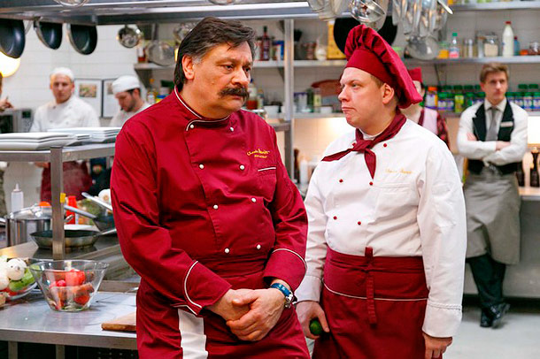
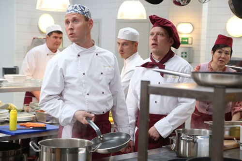

Назад
Наш состав
Виктор Баринов

Шеф-повар ресторана «Клод Моне» — просто гуру в поварском колпаке. Он знает, как угодить даже самому придирчивому клиенту, замесив в одном блюде фуагра и картошечку. Но на другой чаше весов его гениальности лежат все возможные и невозможные пороки: алкоголь, азартные игры и просто невыносимый характер, особенно в гневе. Ведет он себя примерно так же, как и сварливая супруга, которая ждет мужа домой: встречает со сковородкой и в состоянии аффекта использует ее как горячее оружие.
Лёва, су-шеф

Очень правильный, очень робкий, живет с мамой, не пьет, не курит. Лева прям-таки кладезь положительных качеств, от которых даже актер Сергей Епишев не знает, как избавиться: настолько сроднился с образом. Впрочем, если исполнительный и ответственный работник Лева вряд ли далеко пойдет, то Сергей вполне успешен и в карьере, и в личной жизни.
Виктория Гончарова, арт-директор ресторана

Арт-директор ресторана Виктория Гончарова — карьеристка. Успешная, деловая, просто Снежная королева — без эмоций и с ледяным сердцем. Приехала в Москву из Калининграда, поэтому привыкла во всем полагаться только на себя. Но тут встречает Макса и вместо Кая пытается сложить из букв слово «счастье».
Сеня, повар-универсал

Сеня — специалист по шинковке и мясу. Он веселый, дружелюбный, но трусоват и постоянно что-то тырит.
Федя,специалист по рыбе

Федя специализируется на приготовлении рыбных блюд и мастерски справляется со своей работой. Коллеги Федора любят его за то, что он не дает им скучать, развлекая разными байками из своей прошлой моряцкой жизни.



